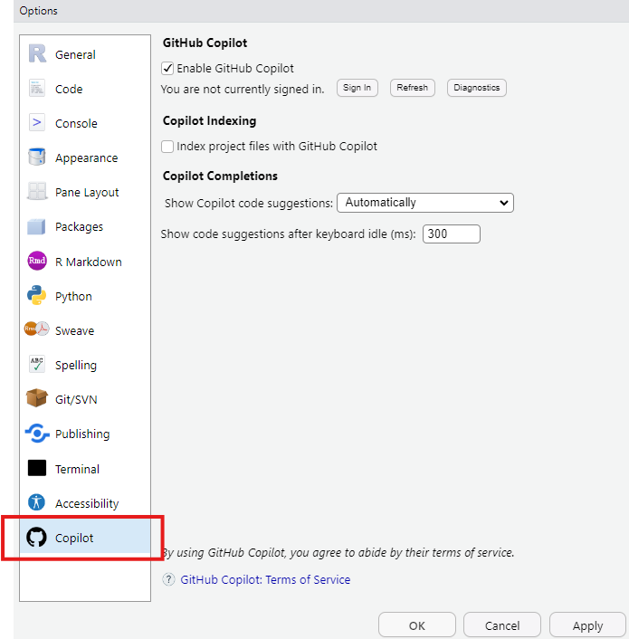
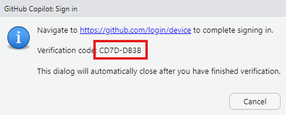
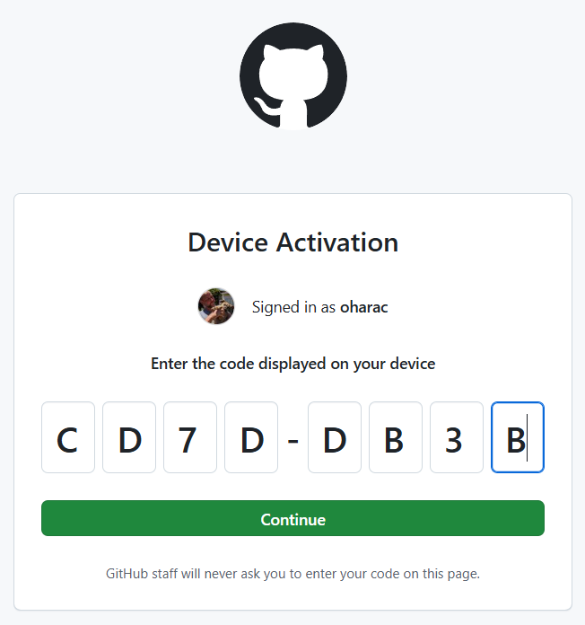

- Active coding support with GitHub Copilot:
- Configure RStudio to work with GitHub Copilot
- Practice techniques to use Copilot to assist with coding tasks
- Iterative coding support with ChatGPT:
- Comment existing code
- Translate pseudocode into functional code
- Translate code from one dialect to another (base R vs. tidyverse)
- Translate code from one language to another (R vs. Python)
1 Active coding support with GitHub Copilot
GitHub Copilot is an AI-powered code completion tool that helps you write code faster and with fewer errors. It is available as a plugin for Visual Studio Code, and it can also be used in RStudio. In this portion of the lesson, you will learn how to configure RStudio to work with GitHub Copilot and practice techniques to use Copilot to assist with coding tasks.
If you have an education GitHub account (e.g., an .edu email address that is associated with your GitHub account), you should have free access to Copilot. Otherwise you may need to pay for a subscription. See more Copilot requirements here.
1.1 Configure RStudio to work with GitHub Copilot
In RStudio, open the “Tools” menu and scroll down to the “Global Options” menu item. In the dialog box, at the bottom of the left hand sidebar, you should see “Copilot” as an option (if not, perhaps you have an old version of RStudio, requires 2023.09.0 or later!).

Click on the checkbox for “Enable GitHub Copilot.” You may wish to change some of the other options: setting Copilot to auto-suggest completions or only show completions when asked using ctrl-\, or changing the delay time before Copilot starts giving suggestions.
Next, click the “sign in” button under the “Enable GitHub Copilot” checkbox. This will open dialog box with a link and an eight-digit verification code:

Click on the link, enter the verification code, and sign in with your GitHub account.

Once you’ve entered the authorization code, you will need to authorize RStudio to use Copilot:
Now you should be good to go! Open up a new Quarto document and start typing, see if it starts autocompleting your sentences or code.
1.2 Practice techniques to use Copilot to assist with coding tasks
You need a fundamental understanding of coding to be able to use Copilot effectively. It can make intelligent guesses as to your intentions, but doesn’t necessarily know where your files are, or what you want to do with the data. So it is helpful to guide Copilot in the right direction using comments or sentences.
Pseudocode is a way of planning out an analysis by writing out the sequence of steps you expect to take, in plain language, perhaps as bullet points. If you know the names of certain functions, it is helpful to use those in your pseudocode, to help Copilot incorporate those into its code completions.